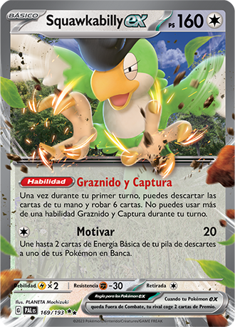
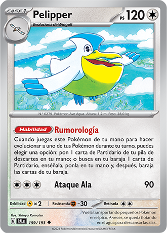
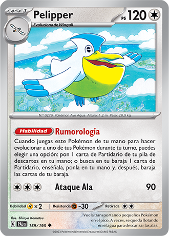
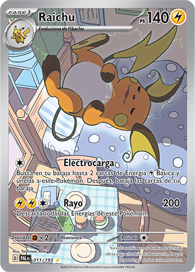
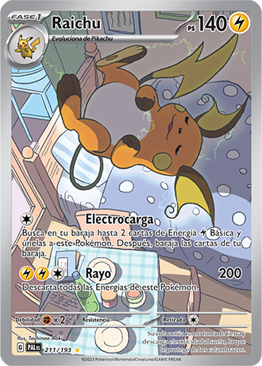
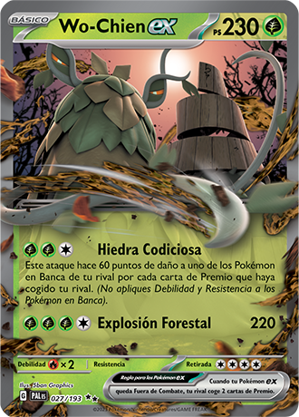
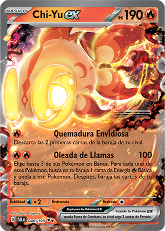
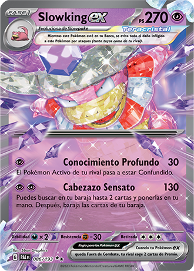

NOVEDADES DE LA EXPANSIÓN
HAZ EVOLUCIONEAR NUEVAS ESTRATEGIAS
CON PODEROSAS HABILIDADES
Las habilidades Pokémon pueden marcar para bien o para mal el funcionamiento de una baraja, y hay un montón de nuevas habilidades listas para entrar en acción en Escarlata y Púrpura-Evoluciones en Paldea. Empieza tu partida con buen pie con la habilidad Graznido y Captura de Squawkabilly, que te permite descartar tu mano y robar seis cartas. Graznido y Captura recuerda a la habilidad Dedecambio de Dedenne-GX o a la habilidad Recurso Oscuro de Crobat V, con dos diferencias fundamentales: no tienes que poner en juego un Pokémon de tu mano para activar esta habilidad, y solo puede usarse durante tu primer turno. Si estás buscando acelerar Energía rápidamente, Forretress ex puede inundar tu tablero con hasta cinco Energías Básicas, pero tiene un precio. Cuando usas su habilidad Energía Explosiva, Forretress ex queda Fuera de Combate, y por lo tanto, entrega dos cartas de Premio a tu rival. Pelipper y Tinkaton también pueden echarte una mano; el primero te ayuda a buscar o recuperar una carta de Partidario y el segundo roba tres cartas en un turno.
 

OBSERVA LOS POKEMON EN ILUSTRACIONES ESPECIALES
 

Relájate y disfruta con los Pokémon a lo largo y ancho de Paldea en estas ilustraciones especiales. Observa a Sprigatito acurrucado en una maceta en medio de un colorido jardín, o diviértete con Wooper de Paldea mientras dormita en el barro. Ten cuidado de no despertar a Raichu de su siesta, y ten todavía más cuidado con estos Maushold que comen y duermen juntos en un árbol.
SE TESTIGO DEL PODER DE LOS POKEMON EXS
Haz evolucionar tu juego con los Pokémon Debacle legendarios Wo-Chien y Chi-Yu, que hacen su debut en JCC Pokémon como Pokémon ex. El ataque Hiedra Codiciosa de Wo-Chien ex puede golpear duro cuando tu rival empieza a coger cartas de Premio, ¡y te ayuda a preparar una gran remontada! Chi-Yu ex está más centrado en poner presión al principio de la partida con su ataque Oleada de Llamas, que hace unos sólidos 100 puntos de daño y une una carta de Energía Básica hasta a tres Pokémon en Banca. Por su parte, Dedenne ex y Slowking ex se presentan como Pokémon ex Teracristal, con ataques que pueden ayudarte a avanzar en una partida. Cabezazo Sensato de Slowking ex inflige unos respetables 130 puntos de daño y te permite buscar hasta dos cartas en tu baraja, mientras que Coletazo Intercambio de Dedenne ex puede curar de forma instantánea a uno de tus Pokémon en Banca moviendo esos contadores de daño directamente al Pokémon Activo de tu rival.
  